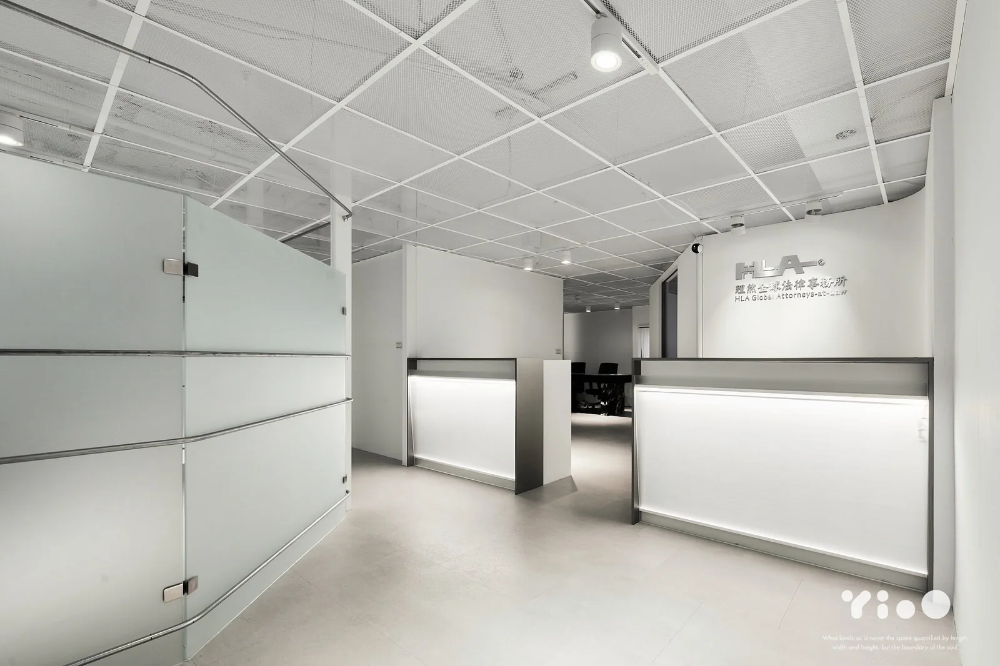
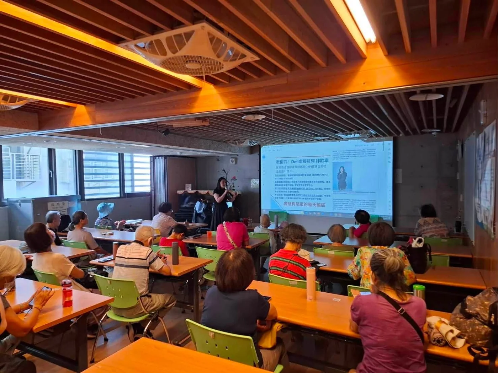

01 / HLA
理性洞見
我們先理解，再判斷。面對複雜案件，不急於以單一法條定義問題，而是重新整理事實、時間、證據、關係與利益。法律分析必須建立在正確的問題設定上，只有看見真正風險，才能提出具有價值的意見。
ABOUT HLA
在法律、商業與人之間，建立更清晰的決策路徑。

THE HLA PERSPECTIVE
理然全球法律事務所致力於處理需要高度判斷、整合與執行的法律問題。我們所面對的案件，經常不是單一法律領域可以獨立回答：一場公司股東爭議可能同時涉及契約、公司治理、刑事風險與資產保全；一件不動產糾紛可能牽涉共有關係、交易條件、占有、強制執行與家族安排；一個跨境投資問題則可能同時包含交易架構、公司權利、外國主體與爭議處理。理然的工作，就是在這些交叉問題中建立清楚架構，協助客戶找到真正可行的解決路徑。
我們的團隊結合不同世代與不同專長。資深律師帶來長期法院實務、土地與民刑事案件的經驗；企業與商務領域律師關注公司治理、契約、股東、債權與跨境交易；新世代團隊則持續將數位工具、案件管理與資訊結構化導入法律服務。這種組合，使我們能在保有傳統法律專業嚴謹度的同時，更有效率地處理大量資料、複雜事實與跨領域問題。
理然重視每一個案件的「整體性」。我們不只問客戶要主張什麼，也會問：如果主張成功，後續是否能執行？如果進入訴訟，對商業關係或家庭關係會造成什麼影響？如果和解，條款是否足以避免下一次爭議？如果企業建立制度，實際營運是否做得到？法律方案必須能回到現實中被使用，這是我們對專業的基本要求。
OUR VALUES
我們先理解，再判斷。面對複雜案件，不急於以單一法條定義問題，而是重新整理事實、時間、證據、關係與利益。法律分析必須建立在正確的問題設定上，只有看見真正風險，才能提出具有價值的意見。
法律不是孤立的規則，而是一連串選擇。提告、答辯、保全、協商、和解、契約重整或暫不行動，每一條路都可能改變後續局勢。我們把程序、證據、成本、時間與對方反應一起納入策略，協助客戶選擇最符合整體利益的路徑。
法條提供原則，實務決定如何落地。團隊結合長期法院實務、民刑事訴訟、土地與財產爭議、企業與商務案件經驗，重視法庭上真正會被追問的問題、證據如何被評價，以及判決後如何執行。
企業與資產愈來愈跨越地域，法律問題也不再只有單一法域。理然以跨境交易架構、境外投資與國際爭議的角度理解案件，在台灣法框架內處理問題的同時，也關注交易背景、外國主體、跨境溝通與執行風險。
每一個法律案件背後都有真實的人、家庭、公司與選擇。專業不等於冷漠。我們重視把複雜法律說明成客戶能理解的語言，讓客戶知道風險與選項，而不是只接收結論。
一次案件的結果很重要，但長期的信任更重要。我們希望客戶在做重要決策前願意先來討論，而不是等到風險已無法控制才尋求補救。因此，我們重視資訊透明、風險揭露、策略溝通與可持續的合作關係。
THE PEOPLE
不同世代、不同專長，同一個策略框架。理然由具長期司法與執業經驗的資深律師，結合企業、商務、跨境及民商爭議領域律師共同組成。每一件案件依實際需要配置專業，而不是讓單一視角限制解決方案。
MEDIA & PUBLIC ENGAGEMENT
從公共提問出發，
讓專業判斷回到生活。
法律的意義，既在文件與程序，也在每一次需要做決定的日常。理然透過防詐講座與媒體交流，把複雜問題轉化為可以理解、可以查證的資訊。

NEXT STEP / HLA
從事實、文件與目標出發，討論適合的下一步。